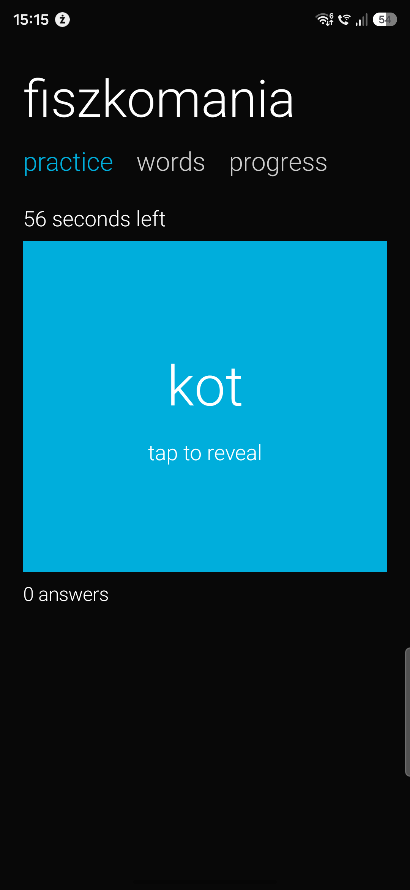

LEARNING / 01INTERNAL TEST
Fiszkomania
Make English practice your own. Create cards for words, sentences and grammar, then practise and follow your progress with separate profiles.
Internal testing is limited to invited accounts. Join first, then open Google Play with the same account.
